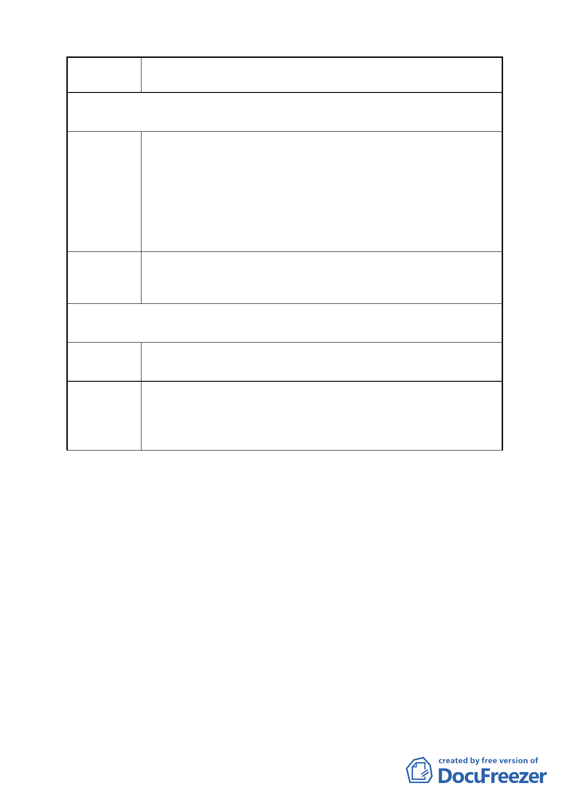

案 名 變更臺北市南港區鐵路地下化沿線土地主要計畫案
第 3 次陳情（98.7.2）
陳情理由
建議辦法
1.本案重劃後建蔽率為 45%，遠小於南港輪胎案 65%（最高
80%）之建蔽率。
2.公園用地「變更台北市南港區鐵路地下化沿線土地主要計畫
案」原為本公司土地之一部份，本公司又是本街廓最大之地
主，希望保留祖先留下來的基地完整性。
3.本基地南側毗鄰之交通用地應為 20m 計劃道路，但未指定建
築線，無法由南側進出。
1.比照南港輪胎案之建蔽 65% （最大 80%）。
2.重劃後的配地鄰接公園用地。
3.將南側交通用地變更為道路用地，並指定建築線。
第 4 次陳情（98.7.14）
陳情理由
建議辦法
1.建蔽率比照南港輪胎。
3.重劃後本公司基地位置完全鄰接公園，南北側各鄰接 20 米
計劃道路及南港路（詳附件）。
若以上兩點獲致認同，我們願意參與重劃。
- 20 -